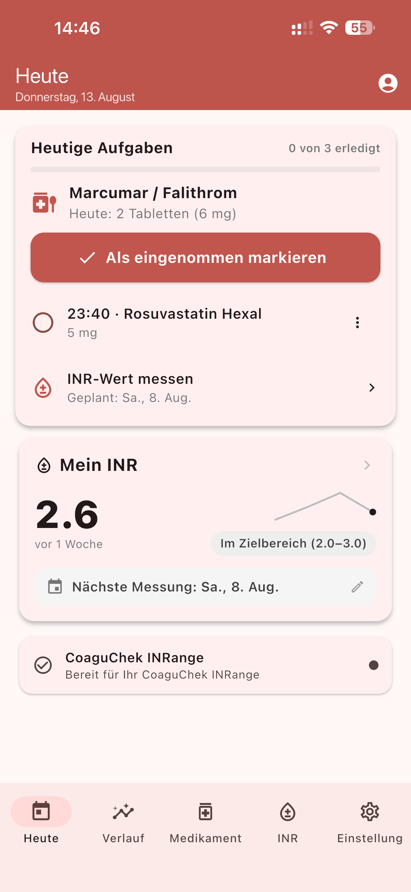
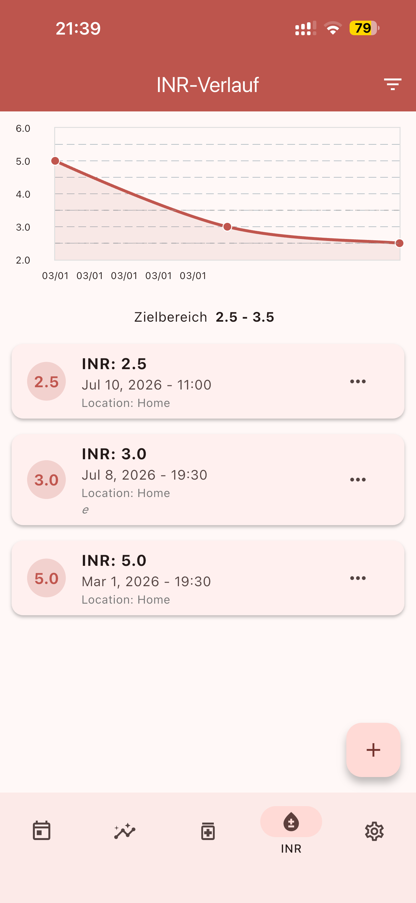
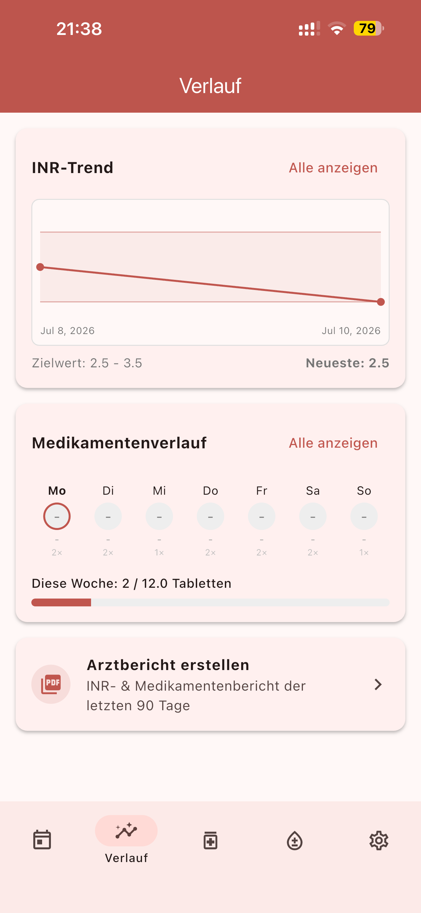
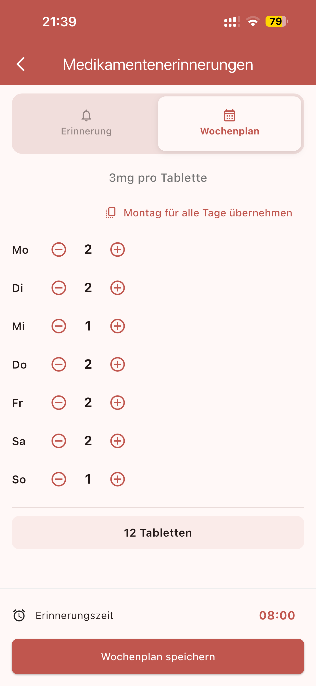
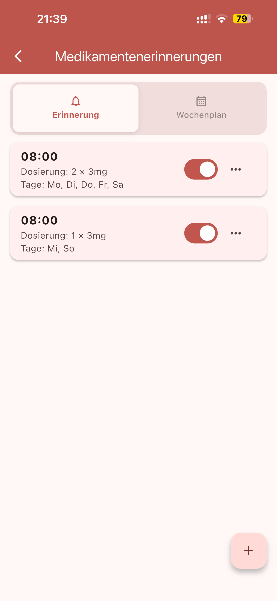

Erinnern. Abhaken. Fertig.
Medinote meldet sich zu der Uhrzeit, die Sie festlegen. Ein Tipp auf die Benachrichtigung – „Eingenommen“ oder „Nicht eingenommen“ – und Ihr Einnahmeprotokoll ist auf dem neuesten Stand.
Jetzt vor allen anderen testen
Medinote ist das digitale Tagebuch für alle, die Gerinnungshemmer („Blutverdünner“) wie Marcumar®, Falithrom® oder Warfarin nehmen: Einnahmen mit einem Tipp abhaken, INR-Werte direkt von microINR® oder CoaguChek® INRange übernehmen – und beim Arzttermin alles griffbereit haben. Ohne Konto bleiben alle Daten auf Ihrem Telefon.

Die INR-Werte stehen im Gerinnungspass, der Dosierungsplan hängt am Kühlschrank, die Strichliste für die Tabletten liegt irgendwo auf einem Zettel – und beim Arzttermin fehlt genau der eine Wert.
Medinote bringt alles an einen Ort.
Entwickelt für den Alltag mit Gerinnungshemmern: übersichtlich, gut lesbar und einfach zu bedienen.
Medinote meldet sich zu der Uhrzeit, die Sie festlegen. Ein Tipp auf die Benachrichtigung – „Eingenommen“ oder „Nicht eingenommen“ – und Ihr Einnahmeprotokoll ist auf dem neuesten Stand.
Kein Problem: Tragen Sie den Dosierungsplan Ihrer Ärztin oder Ihres Arztes einmal ein – der Wochenplan zeigt jeden Tag, was laut Plan dran ist. Ändert Ihre Praxis den Plan, passen Sie ihn mit wenigen Tipps an.
Einmal per Bluetooth verbinden – fertig. Ihre Messwerte übertragen microINR® und CoaguChek® INRange automatisch in die App: ohne Abtippen, ohne Zahlendreher, ohne Aufwand.
Ihre INR-Werte als Liste und als Diagramm – vom Messgerät übernommen oder von Hand eingetragen. Den Referenzbereich, den Ihre Ärztin oder Ihr Arzt Ihnen vorgegeben hat, können Sie im Diagramm einblenden.
Marcumar®/Falithrom®, Warfarin, Acenocoumarol und weitere Medikamente mit einem Tipp festhalten – Ihr vollständiger Einnahmeverlauf, griffbereit beim Arzttermin oder als PDF zum Ausdrucken.
Medinote funktioniert ganz ohne Konto: Ohne Registrierung werden alle Daten ausschließlich auf Ihrem Telefon gespeichert. Ein Konto erstellen Sie nur, wenn Sie es möchten.
Medinote ist Ihr Tagebuch – nicht Ihr Arzt. Die App speichert, was Sie eintragen oder Ihr Messgerät überträgt, erinnert Sie an Ihren eigenen Plan und erstellt auf Wunsch eine PDF-Übersicht. Sie schlägt keine Dosis vor und gibt keine Therapieempfehlungen – über Ihre Dosierung entscheiden Sie immer gemeinsam mit Ihrer Ärztin oder Ihrem Arzt.
Neu: Widgets für iPhone & Android
Die Medinote-Widgets zeigen auf dem iPhone-Sperrbildschirm oder dem Android-Startbildschirm, ob die heutige Einnahme noch offen ist oder schon dokumentiert wurde – dazu Ihren letzten INR-Wert und die nächste geplante Messung.
iPhone ab iOS 16. Die Widgets zeigen Ihren gespeicherten Plan – Ihre Erinnerungen erhalten Sie weiterhin als Benachrichtigung.
Klare Oberfläche, große Schrift, hoher Kontrast – gestaltet für den täglichen Gebrauch.




In drei Schritten zu Ihrem digitalen INR-Tagebuch.
App öffnen und direkt starten, ganz ohne Registrierung. Gerinnungshemmer auswählen, dann Wochenplan und INR-Referenzbereich so eintragen, wie Ihre Ärztin oder Ihr Arzt sie vorgegeben hat – fertig.
Einnahmen mit einem Tipp abhaken, sobald die Erinnerung kommt. INR-Werte übernimmt die App per Bluetooth vom Messgerät (microINR® oder CoaguChek® INRange) – oder Sie tragen sie von Hand ein.
Beim Arzttermin den Verlauf zeigen oder als PDF ausdrucken – und Ihre Daten jederzeit als Datei exportieren. Ohne Konto bleibt dabei alles auf Ihrem Telefon.
Gesundheitsdaten sind besonders sensibel. Deshalb gilt bei Medinote: Ohne Konto bleibt alles auf Ihrem Telefon – ein Konto ist freiwillig. Entwickelt von Anfang an nach den Vorgaben der DSGVO.
Nutzen Sie Medinote sofort und ohne Registrierung. Ohne Konto werden Ihre Gesundheitsdaten – INR-Werte und Medikationseinträge – ausschließlich lokal auf Ihrem Telefon gespeichert.
Ein Konto ist optional. Wenn Sie eines erstellen, werden Ihre Daten verschlüsselt übertragen – und nur mit Ihrer ausdrücklichen Einwilligung verarbeitet (DSGVO Art. 6 und 9), jederzeit widerrufbar.
Sie können Ihre Daten jederzeit in der App exportieren und vollständig löschen – auf Wunsch samt Konto, ohne Rückfragen.
Medinote zeigt keine Werbung und verkauft keine Daten. Wir erheben nur, was für die Funktion der App notwendig ist.
Nein. Ihre Dosis legt Ihre Ärztin oder Ihr Arzt fest. Medinote zeigt den Plan, den Sie eingetragen haben, und erinnert Sie daran.
Ja. Mit microINR® oder CoaguChek® INRange kommen die Werte automatisch in die App. Sie können sie aber auch von Hand eintragen – zum Beispiel nach einer Messung in der Praxis.
Nein. Führen Sie Ihren Gerinnungspass bitte weiter wie gewohnt – er ist zum Beispiel im Notfall wichtig. Medinote ist Ihre digitale Ergänzung für den Alltag.
Nein. Medinote ist eine App zur persönlichen Dokumentation: Sie speichert Ihre Einträge, erinnert Sie an Ihren eigenen Plan und exportiert Ihre Daten auf Wunsch. Sie stellt keine Diagnosen und gibt keine Therapieempfehlungen.
Medinote ist derzeit in der Pilotphase in Deutschland. Testen Sie die App vor allen anderen – Ihre Rückmeldung landet direkt bei uns und hilft, Medinote für den Alltag noch besser zu machen.
Lieber per E-Mail? kontakt@medi-note.de